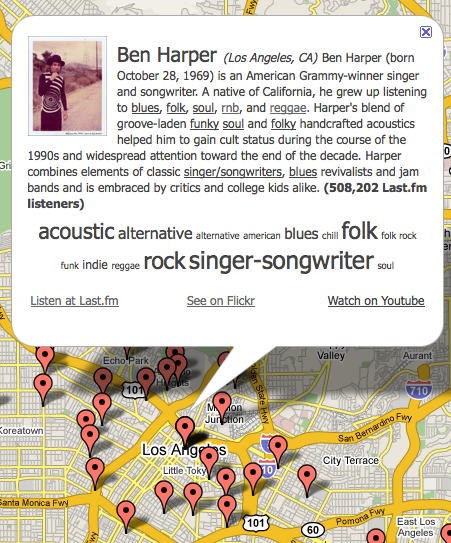

More updates to the SXSW Artist Catalog ....
I've done a few more updates to the SXSW Artist catalog.
I've spent quite a bit of time working on improving data quality -
trying to make sure that we maximize the chance that an artist will be
resolved properly. Most of the problems had to do with dealing with
international characters, HTML entities and encodings. After a bit of
work, I've reduced the mismatches so that we can now resolve 1136 of
1168 artists (> 97%).

I've added a 'Newest' page that shows artists that have been recently added to the list by SXSW. I've also added an artist patch up mechanism that lets me easily fix data for an artist if it is wrong. I've already used it too - the band The Hot Kicks send me some updated info that I was able to apply with the patch mechanism. And finally, I've added a link that will show you Flickr images of the artist.

Ha!
I planned on busting your chops by looking for Flickr images of Grizzly Bear and getting back photos from the zoo. You've clearly outsmarted me with the "+(show+OR+concert+OR+sxsw+OR+live+OR+band)&mt=photos" parameters.
This is the first Flickr implementation for music that I've seen done right. Usually you put in "The Cure" and you get back a bunch of medical images or photos of pink ribbons (like so: http://www.musicportl.com/artist/The+Cure).
Your little step actually makes the image results relevant. Nice work (again).
Posted by Zac on January 21, 2009 at 02:31 PM EST #
Thanks Zac - I learned my lesson well with SnappRadio -- after spending hours looking at pictures of 'CAKE' or 'BLUR'ry pictures. Still, it is a lesson for all the new bands out there - before you pick a name for your band, at least google for it. Try to find the website for the new band 'women' ( http://www.jagjaguwar.com/news.php#305 ) - it is nearly impossible.
Posted by Paul Lamere on January 21, 2009 at 03:01 PM EST #
A million years ago I needed to verify the group members of the rap act "Hot Boyz"...that was an adventure in Googling, let me tell you.
Posted by Zac on January 21, 2009 at 03:15 PM EST #
@zac - heh ... I bet it was an adventure. Reminds me of the time I thought I could find info on unix commands by going to 'manpages.com' I was wrong, and I'm afraid to check to see what's there now.
Posted by Paul Lamere on January 21, 2009 at 03:35 PM EST #